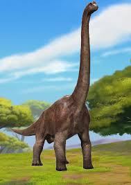
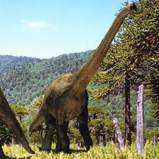

Brachiozaur to ogromny roślinożerny dinozaur z okresu późnej jury, żyjący około 154-153 miliony lat temu na terenach dzisiejszej Ameryki Północnej. Był to jeden z największych znanych dinozaurów, osiągający długość do 25 metrów i wagę nawet do 50 ton. Jego imponujące rozmiary czynią go jednym z najbardziej znanych i fascynujących dinozaurów z tego okresu. Nazwa "Brachiozaur" wywodzi się z greckich słów oznaczających "ramię" i "gad", co odnosi się do długiego ramienia tego dinozaura.  Jedną z charakterystycznych cech Brachiozaura były jego długie kończyny przednie, znacznie dłuższe niż tylne, co nadawało mu charakterystyczny wygląd. Długość jego przednich kończyn sprawiała, że był w stanie sięgać po wysoko rosnące gałęzie drzew, co czyniło go doskonałym roślinożercą wysokościowym. Umożliwiało mu to dostęp do pokarmu, który nie był dostępny dla innych dinozaurów o krótszych kończynach, co zapewne przyczyniło się do sukcesu tego gatunku w okresie jury.  Brachiozaur miał także długi, wzniosły kark oraz stosunkowo małą głowę w porównaniu do reszty ciała. Jego ogromna wielkość sprawiała, że był stosunkowo niewrażliwy na ataki drapieżników swojego czasu, co pozwalało mu na spokojne pasienie się na otwartych terenach. Pomimo swojej wielkości i siły, Brachiozaur prawdopodobnie unikał walki i preferował spokojne życie w stadzie, gdzie mógł korzystać z ochrony grupy przed drapieżnikami oraz mieć dostęp do większej ilości pożywienia.

Adres: Zwoleń Radosna 26-700
Kontakt: nr. 797 715 111
email: jurrasicpark@gmail.com
Godziny otwarcia